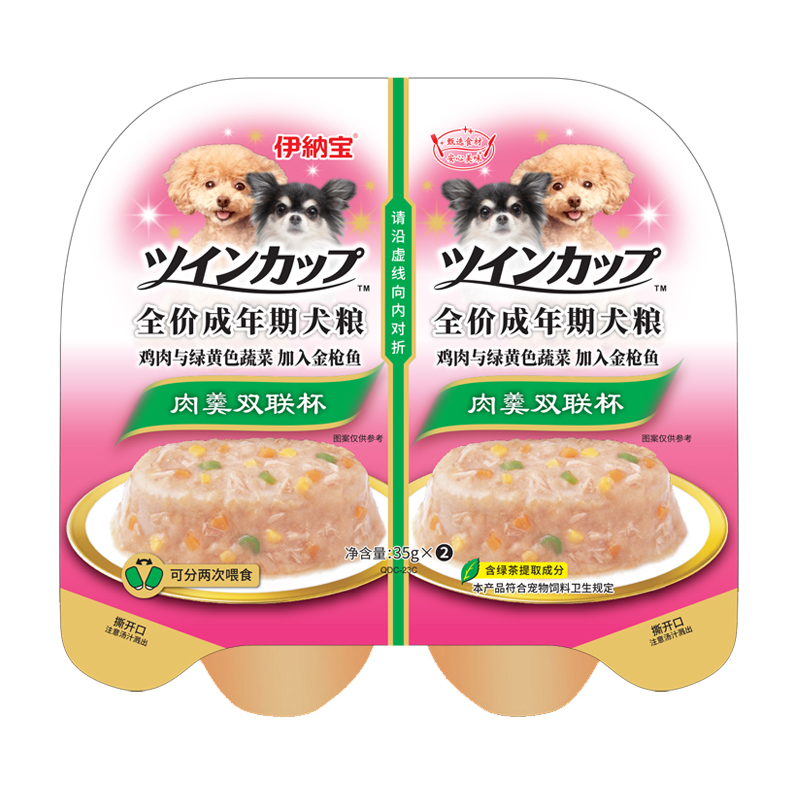

Mô Tả
Pate vị gà, rau củ và phô mai INABA Chicken, Vegetables & Cheese dạng hộp đôi. Sản phẩm thức ăn ướt phù hợp với nhu cầu dinh dưỡng dành cho chó có thể tự ăn riêng hoặc trộn cùng với bữa ăn hàng ngày. Không chứa chất bảo quản.
Thành phần dinh dưỡng
Thịt ức gà 11%, phô mai, gan gà 3%, rau xanh, cà rốt, bí đỏ, đậu hà lan, tinh bột, collagen cá, men gạo đỏ… cùng các thành phần phụ gia khác. Với thành phần chiết xuất trà xanh giúp làm giảm mùi hôi phân và nước tiểu của chó.
Hướng dẫn sử dụng
Cho chó ăn khoảng 2 hộp / 1 ngày, hoặc điều chỉnh tăng lên theo tùy mức độ hoạt động và thể trạng của chó. Xem ngày sản xuất ở mặt sau của bao bì. Bảo quản trong tủ lạnh sau khi mở. Nên hâm ấm trước khi sử dụng.